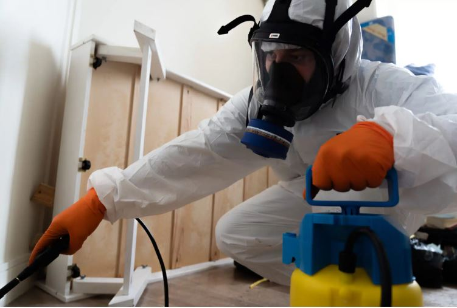
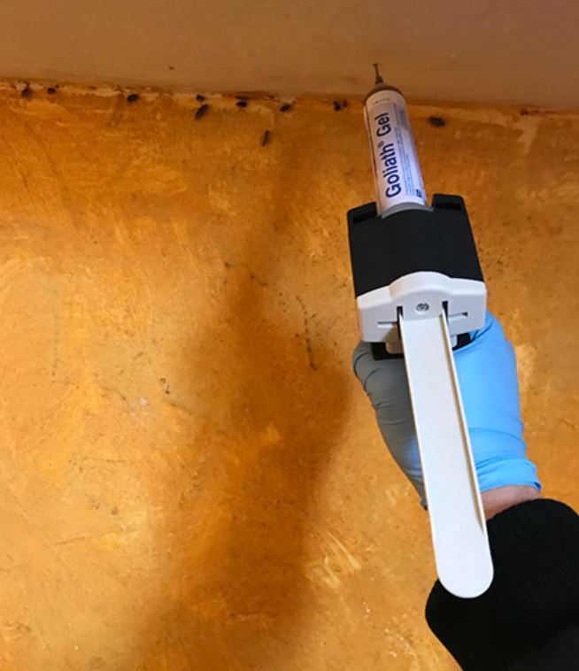

المطاعم والمقاهي
فحص مناطق التحضير والتخزين والتجهيزات مع مراعاة سلامة الأغذية.
OREZIA GROUP | شركة مكافحة الحشرات بطنجة
هل لاحظت وجود صراصير في المنزل أو المطعم أو الفندق؟ تقدم OREZIA GROUP خدمات تشخيص ومعالجة الصراصير بطنجة باستعمال طرق مهنية تناسب نوع الإصابة وطبيعة المكان، مع المتابعة والإرشادات الوقائية.
طلب تشخيص مجاني عبر واتساباتصل بنا: 0660 11 67 65قد تختبئ الصراصير خلف المعدات وتحت الأحواض وداخل الشقوق والأماكن الرطبة. وتحتاج المطاعم والمطابخ المهنية على وجه الخصوص إلى تقييم دقيق لمصادر الإصابة قبل اختيار المعالجة المناسبة.
فحص مناطق التحضير والتخزين والتجهيزات مع مراعاة سلامة الأغذية.
تدخل منظم يراعي طبيعة النشاط ويشمل توصيات للوقاية والمتابعة.
فحص المطابخ والحمامات ومنافذ الدخول لاختيار خطة معالجة مناسبة.
من العلامات المحتملة رؤية الصراصير ليلاً، أو ملاحظة فضلات صغيرة وآثار نشاط في الزوايا وتحت الأجهزة. كما يمكن أن تساعد آثار البيض والانسلاخات في تحديد مستوى الإصابة.
تنتشر الصراصير الألمانية غالباً في الأماكن الداخلية الدافئة، بينما قد تظهر أنواع أخرى بالقرب من المصارف والمداخل. لذلك يعتمد اختيار الوسائل المستخدمة على تشخيص النوع ومواقع اختبائه.
الرش العشوائي وحده لا يكفي دائماً. نعتمد على تدخل مدروس يجمع بين تحديد مصادر المشكلة، والمعالجة الموضعية، وإجراءات الوقاية.
تحديد أماكن الاختباء ومصادر الماء والغذاء ومنافذ الدخول.
استعمال الجل الطُعم أو المصائد أو المعالجات الموجهة بحسب الحاجة وتعليمات السلامة.
تقييم النشاط المتبقي وتقديم توصيات للنظافة وسد الشقوق والوقاية.
صور حقيقية من تدخلاتنا المهنية في مكافحة الحشرات ومعالجة الصراصير.



قد تبقى بيوض أو أماكن اختباء غير مكتشفة، أو تتجدد الإصابة عبر المداخل. تساعد المتابعة وتحسين النظافة وإغلاق الشقوق على الحد من ذلك.
تختلف المدة حسب النوع وحجم الإصابة وطريقة المعالجة، وقد يتطلب الأمر زيارة مراقبة أو أكثر.
نعم، بعد تقييم المكان وتحديد احتياطات سلامة الأغذية وفترة استئناف النشاط بحسب الوسائل المستعملة.
نعم، نقدم تشخيصاً أولياً مجانياً لتقييم المشكلة وتحديد المعالجة المناسبة.
يتحدد السعر حسب المساحة وطبيعة المكان وحجم الإصابة وعدد التدخلات المطلوبة. نقدم عرض سعر بعد التشخيص.
تواصل مع OREZIA GROUP للحصول على تشخيص مجاني وتحديد المعالجة المناسبة لمنزلك أو نشاطك المهني.
التواصل عبر واتساباتصل: 0660 11 67 65